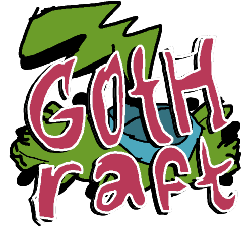
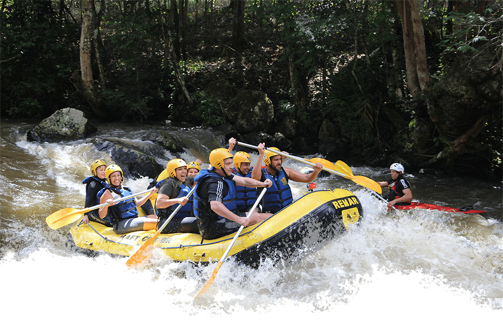
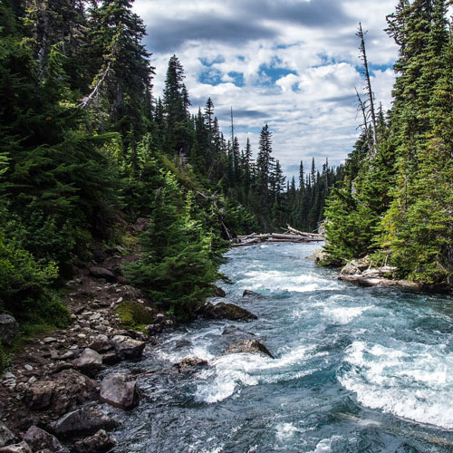

Take on challenging rapids and breathtaking views while slaying every day. We offer experiences for those who can take a few splashes, and for those who are just starting. Enjoy options with our goth-themed safety equipment and rafts, or with our normal themeless sets. It's your choice: Slay or nay.™
Join Us